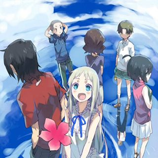

Secret base~君がくれたもの~
我们仍未知道那天所看见的花的名字
从小一起长大的六个孩子，在升上高中之后彼此有了距离。不太与人们接触的宅男宿海仁太、有点被小太妹熏染的安城鸣子、进入重点高中的松雪集与鹤见知利子、放弃读高中而展开旅行的久川铁道……只有幼年死去的本间芽衣子（只有仁太能看见的灵魂），还是单纯一如从前。有一天，芽衣子对仁太说：“帮我实现一个愿望吧。”仁太虽然有点为难，却还是答应了她。以此为契机，为了实现芽衣子的愿望，分散的大家又再次聚集在一起……